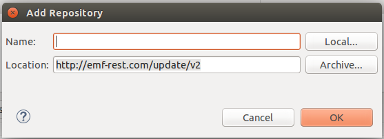
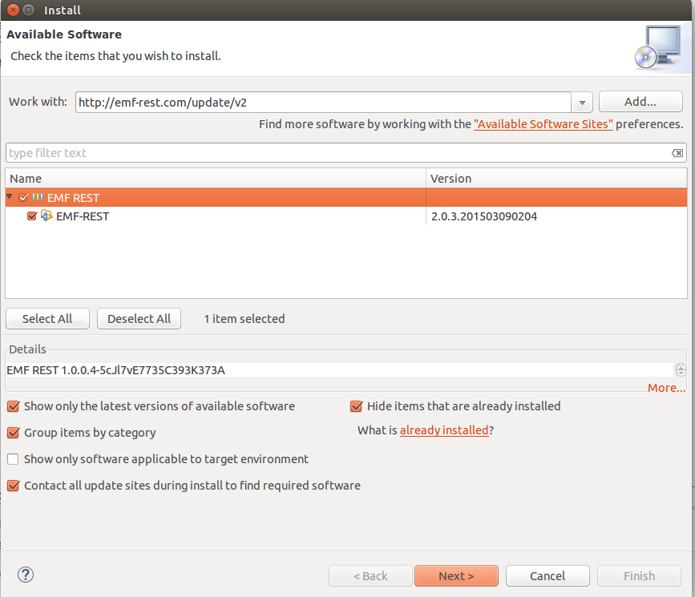

To install/use EMF-REST, you have to use the J2EE distribution of Eclipse, that can be found here. EMF-REST has been tested with the Eclipse Luna version.
Once your Eclipse is ready, you can proceed with the installation of EMF-REST by
- Clicking on Help / Install New Software...
- Adding a new Software Site. Click on Add... and fill in the form as indicated:
(the update site is http://emf-rest.com/update/v2/site.xml)

- You should now see the EMF-REST plugin in the list of components to be installed. Select it and click on Next:

- You can now quickly accept the rest of the steps (license, etc...) and reboot Eclipse
How to use the plugin
To generate a REST API for your models simply:
- Create a new Maven project
- Copy your EMF model under the folder /src/main/resources(the file with extension
.ecore, like the Family model) there
- By default the generated code will search for your data (i.e., the instances of the classes in the model, like the Simpsons family) in the
/src/main/resources folder.
- Right click on the model and select the menu entrance EMF-REST / Generate All
- The generator will create all the needed infrastructure (REST API, JSON serializers and JavaScript library) in your project folder
- Add EMF-REST security domain to JBOSS configuration file (standalone.xml) in order to provide a database to manage users (change family.webDS with your generated datasource)
<security-domain name="emf-rest">
<authentication>
<login-module code="Database" flag="required">
<module-option name="dsJndiName" value="java:jboss/datasources/family.webDS"/>
<module-option name="principalsQuery" value="select password from users where username=?"/>
<module-option name="rolesQuery" value="select rolename, 'Roles' from users u,user_role ur,
roles r where u.id = ur.user_id and r.id = ur.role_id and u.username=?"/>
</login-module>
</authentication>
</security-domain>
- Edit the .properties file (resources/config.properties) according to the URL of your application
- Congrats! The project is ready to be deployed into your application server (JBOSS)
Running your generated application
The fastest way to try your new application is to deploy it using an application server compatible with Eclipse. These steps will describe how to do it:
- Download JBOSS EAP 6.3.0 and unzip in your hard disk
- Run the application by clicking on Run As / Run On Server
- Define a new server of type JBOSS eap and configure the runtime environment to use the previously downloaded server
- Click on finish, the application will be deployed in your local server
To deploy in a production server you can create a .war file using maven command (mvn clean package).
If you'd like to use as well the JavaScript library created during the generation, you'll find it in
/WebContent/scripts .